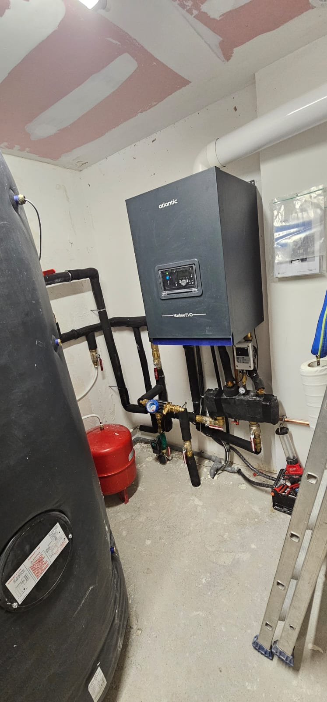

Rénovation de salle de bain
Reprise complète de la pièce, de la dépose aux finitions.
Vous souhaitez remplacer une baignoire, reprendre les évacuations ou rénover entièrement votre salle de bain à Lyon ? KoSBoS Bat coordonne la plomberie, l'étanchéité et les finitions.
Une salle de bain lyonnaise ancienne cumule parfois plusieurs difficultés : canalisations usées, évacuations lentes, robinetterie fatiguée et espace mal organisé. Avant les travaux, nous vérifions les réseaux et définissons ensemble les équipements à conserver ou à remplacer.
Le chantier commence par la dépose et la reprise des arrivées d'eau et des évacuations. Nous préparons ensuite les supports, l'étanchéité et le carrelage, puis nous installons les sanitaires et la robinetterie. Une ventilation correcte est intégrée pour limiter l'humidité.

Un seul interlocuteur pour les réseaux, les équipements et les finitions de votre salle d'eau.
Reprise complète de la pièce, de la dépose aux finitions.
Adaptation de l'espace, receveur, parois et étanchéité.
WC, lavabo, meuble, mitigeur et raccordements soignés.
Remplacement ou modification des canalisations accessibles.
Localisation et réparation d'une fuite visible ou suspectée.
Extraction et renouvellement d'air pour une pièce plus saine.
Rénover une salle de bain demande de coordonner plusieurs corps d'état sans perdre en qualité. Nous anticipons les passages de plomberie, les niveaux et les supports avant la pose du carrelage.
Nous travaillons avec des équipements fiables et vérifions l'étanchéité à chaque étape. À la livraison, vous disposez d'une pièce fonctionnelle, ventilée et facile à entretenir.
KoSBoS Bat coordonne les métiers et vous fait gagner du temps.
Prix, délais et étapes sont détaillés avant le démarrage.
Protection des sols, évacuation des déchets et nettoyage en fin de chantier.
Une intervention à Lyon et dans les communes voisines, avec un suivi personnalisé.
Nous intervenons à Lyon et dans les communes voisines pour la rénovation de salle de bain, le remplacement de sanitaires et les petits travaux de plomberie.
Découvrez nos prestations dans les communes voisines et pour d'autres métiers.
Exemples de retours clients à Lyon, dans l'Ain et en Isère. Les avis ci-dessous sont fictifs et servent uniquement de démonstration : ils sont à remplacer par de vrais témoignages avant publication.
Les réponses aux questions que nos clients nous posent le plus souvent à Lyon et dans les environs.
Décrivez la pièce, les équipements souhaités et les éventuels problèmes de plomberie. Nous vous proposons une solution adaptée.
Réponse sous 24h ouvrées. Devis gratuit et sans engagement.